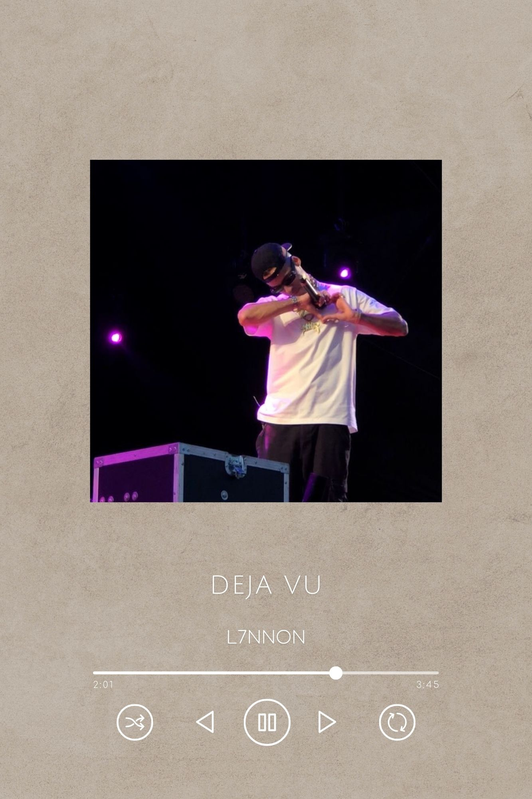
"Seu beijo de bom dia
Seu olhar com tesão
Eu amo estar contigo
Abandonei a função"
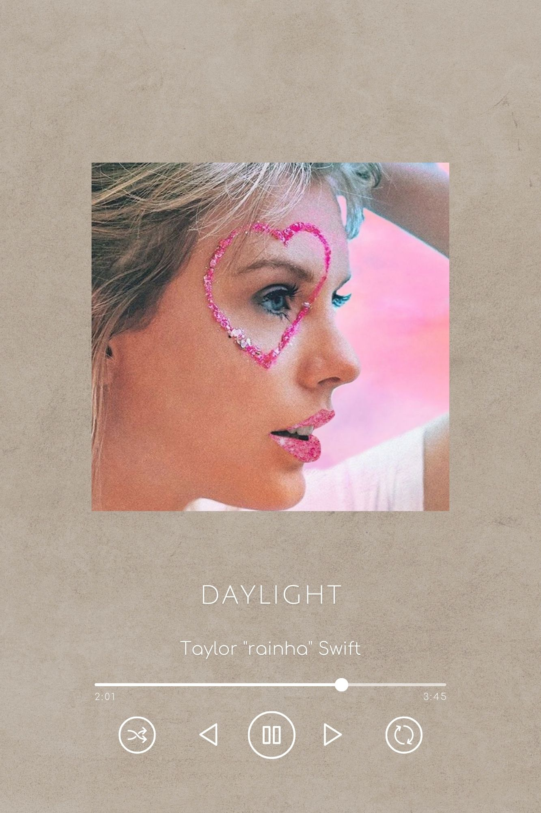
"I don't wanna look at anything else now that I saw you
I don't wanna think of anything else now that I thought of you
I've been sleeping so long in a twenty year dark night
And now, I see daylight
I only see daylight"
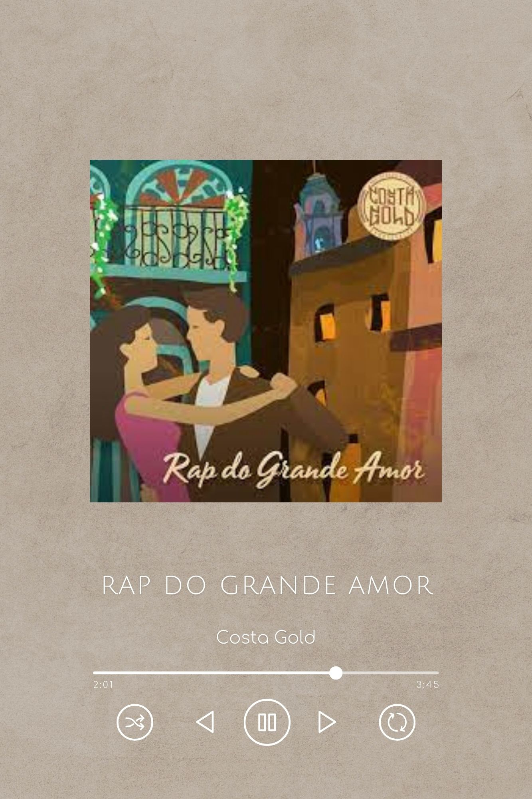
"Alguém me disse que junto de um grande homem tem grande mulher
E o meu sonho me leva
E eu preciso de um motivo que me faça sentir vivo
E não há nada mais perfeito que ela, yeah
E eu me entrego e ela me quebra
Tem Deus no céu e ela na terra
E eu nunca mais vou dar risada do grande amor
Essa rima é bem mais que sincera"
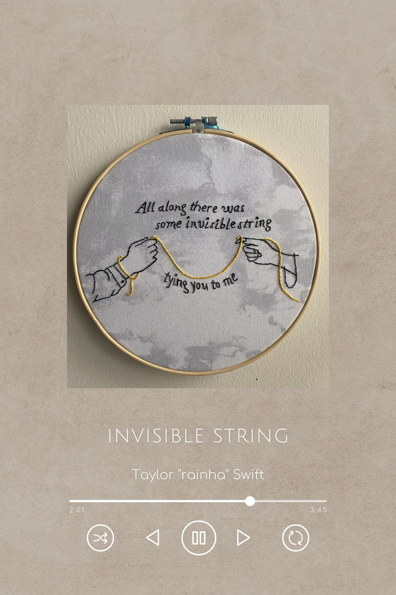
"And isn't it just so pretty to think
All along there was some
Invisible string
Tying you to me?"
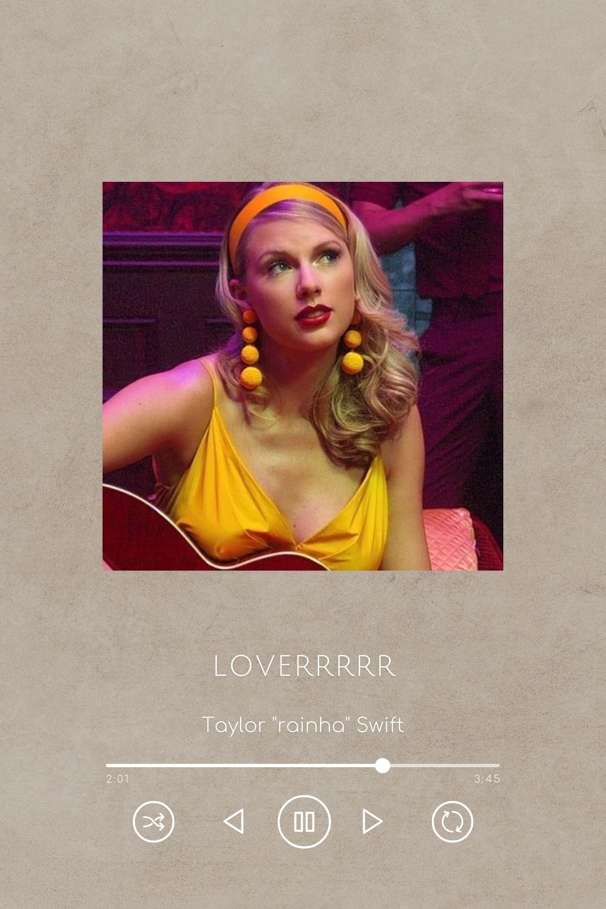
"Can I go where you go?
Can we always be this close, forever and ever?
And ah, take me out, and take me home
You're my, my, my, my
Lover"
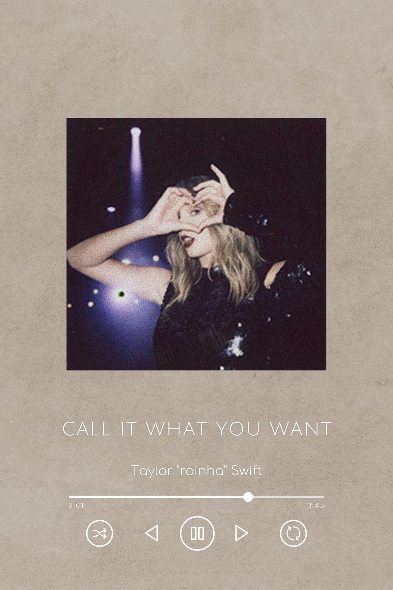
"I want to wear his initial on a chain 'round my neck
Chain 'round my neck
Not because he owns me
But 'cause he really knows me
Which is more than they can say, I"
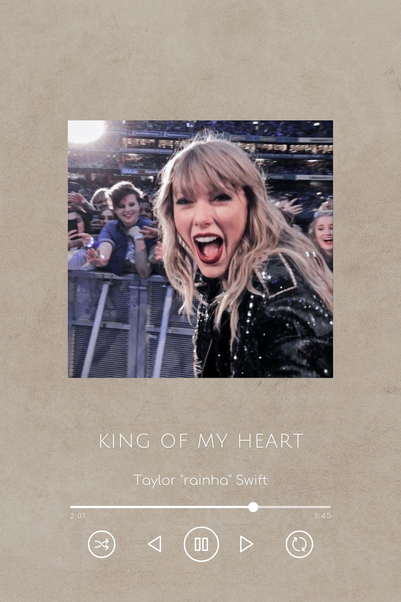
"And all at once, you are the one I have been waiting for
King of my heart, body and soul, woah
And all at once, you're all I want, I'll never let you go
King of my heart, body and soul, woah"
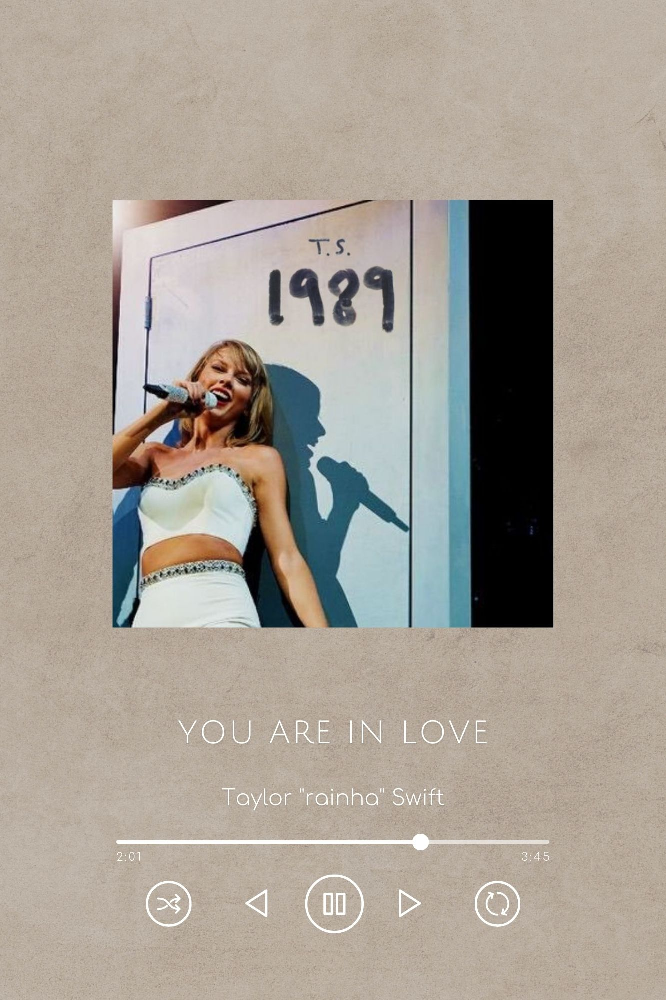
"You can hear it in the silence, silence
You, you can feel it on the way home, way home
You, you can see it with the lights out, lights out
You are in love, true love
You are in love"
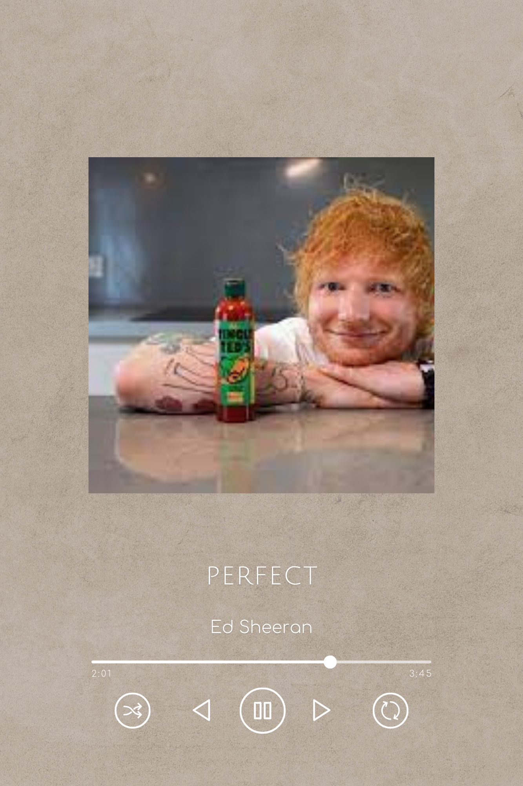
"Well, I found a woman, stronger than anyone I know
She shares my dreams, I hope that someday I'll share her home
I found a lover, to carry more than just my secrets
To carry love, to carry children of our own"
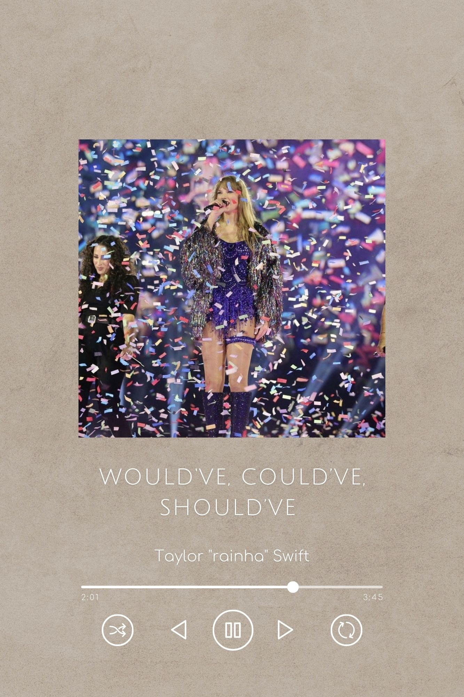
ESSA MUSICA É TRISTE NÃO VAI TER LEGENDA NÃO, EUEM.(mas você ama ela)
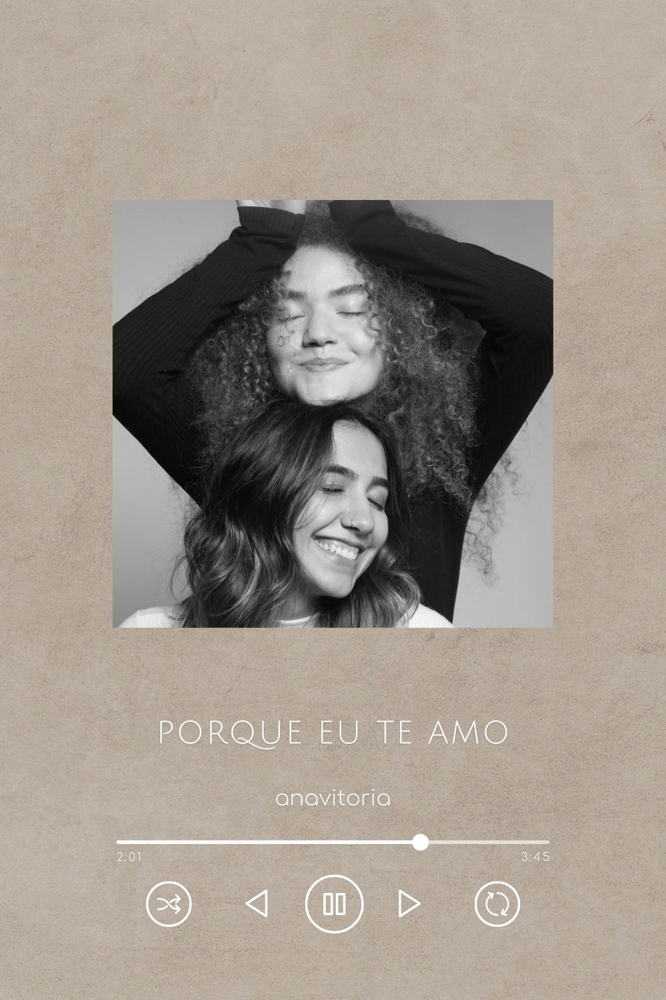
"Porque eu te amo
E não consigo me ver sem ser o teu amor por anos
Não é acaso, é só amor
Não existe engano
Que me carregue pra longe
Que te faça outros planos, meu bem
Teu cheiro só tu tem
Tua boca só tu tem
Me tem"
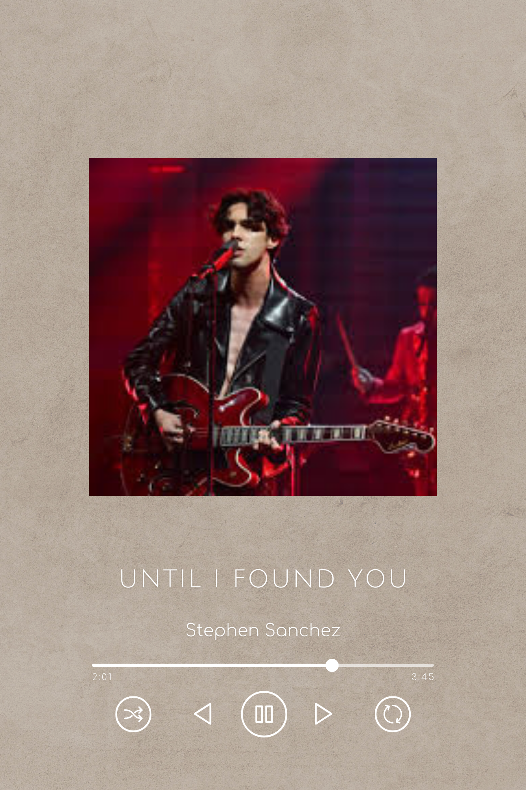
"I would never fall in love again until I found her
I said, "I would never fall unless it's you I fall into"
I was lost within the darkness, but then I found her
I found you"
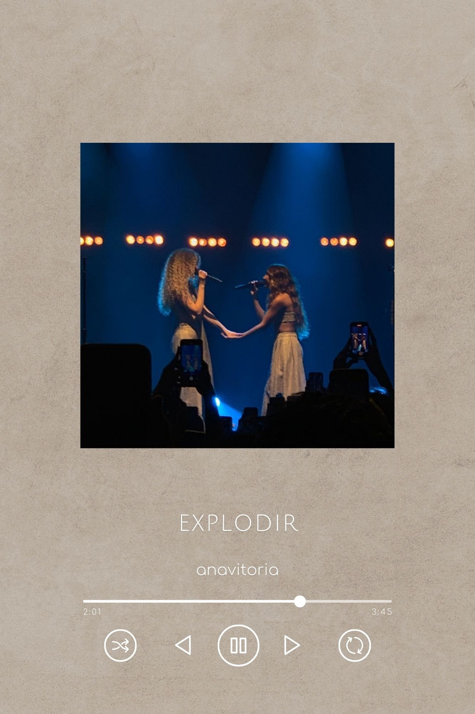
"A gente se escolhe todo dia
E eu te escolheria mais milhões de vidas
Porque uma só é pouco com você, amor
E eu quero tudo que eu puder viver com você"
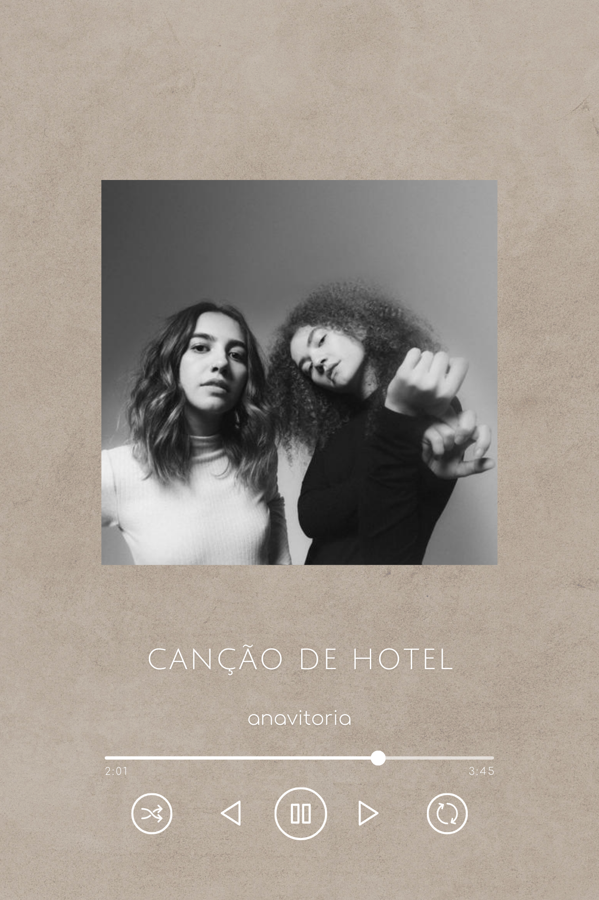
"Não sei porque você
Parece melodia
Pra cada verso meu
Em cada riso meu
Tem você
Não sei dizer
Te vi e já sabia
Que era pra ser
Que era pra ser"
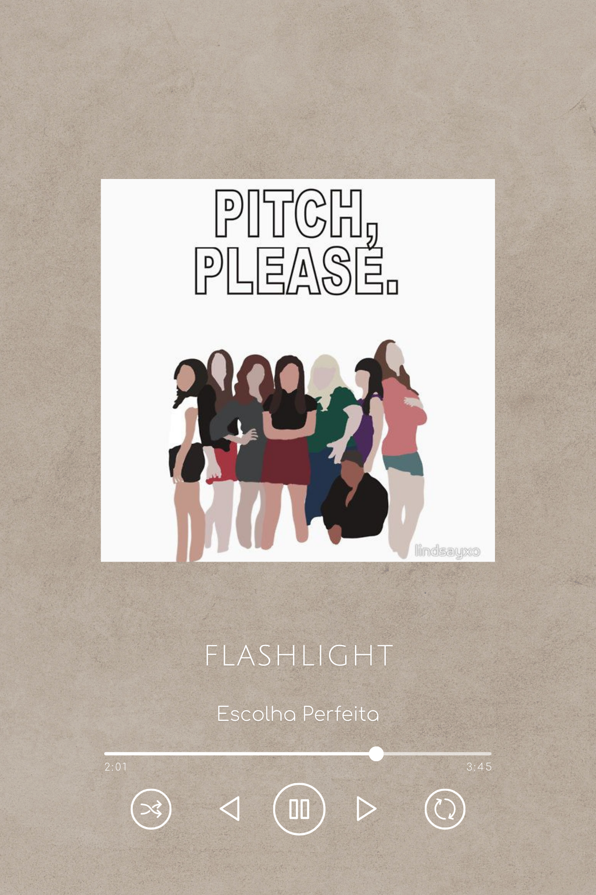
"I got all I need when I got you and I
I look around me, and see a sweet life
I'm stuck in the dark but you're my flashlight
You're getting me, getting me through the night
Can't stop my heart when you're shinin' in my eyes
Can't lie, it's a sweet life
I'm stuck in the dark but you're my flashlight
You're getting me, getting me through the night"